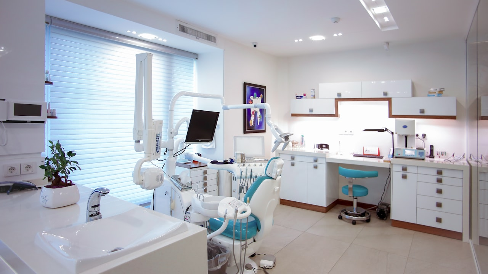

L'optique et le dentaire concentrent souvent le plus gros reste à charge. Avant de changer de mutuelle santé, lisez le tableau de garanties poste par poste — pas seulement la cotisation mensuelle.

Optique : montures, verres, lentilles
Depuis la reforme 100 % santé, certains équipements sont pris en charge sans reste à charge dans le panier prévu. Hors panier, votre mutuelle intervient en % de la BRSS avec des forfaits par équipement.
- Monture : forfait tous les 2 ans (adulte)
- Verres : % BRSS selon correction simple / complexe
- Lentilles : forfait annuel si non remboursées par la Sécu
- Chirurgie réfractive : souvent exclue ou plafonnée
Dentaire : soins, prothèses, orthodontie
Un implant ou une couronne peut laisser 300 à 800 € à charge si le niveau BRSS est faible. C'est le poste le plus discriminant entre contrats « pas cher » et contrats réellement protecteurs.
Méthode comparatif en 3 étapes
- Récupérer vos devis opticien / dentiste des 12 derniers mois
- Demander un tableau de garanties à postes équivalents
- Lancer le questionnaire mutuelle pour calibrer le bon niveau
Exemple chiffré : lunettes hors panier 100 % sante
Une monture a 200 EUR et des verres complexes a 400 EUR peuvent laisser 150 a 300 EUR a charge selon le niveau de remboursement mutuelle optique. Demandez le detail Secu + mutuelle avant achat.
Implant dentaire : lire le % sur prothese
Un devis dentaire detaille chaque acte (CCAM). Comparez le remboursement sur prothese et implant — c'est la ligne qui fait basculer le comparatif entre deux mutuelles au meme prix.
Pourquoi ce sujet compte pour votre remboursement mutuelle optique
Que vous soyez en recherche d'un devis remboursement mutuelle optique, en renouvellement ou en reaction a l'actualite, l'objectif reste le meme : comprendre vos garanties, comparer a postes equivalents et eviter les exclusions cachees. Les termes suivants reviennent souvent dans les contrats : remboursement mutuelle optique, remboursement dentaire mutuelle, tableau garanties, BRSS optique, prothese dentaire, mutuelle sante, comparatif mutuelle, devis mutuelle sante, 100 pourcent sante, forfait lunettes, orthodontie enfant, courtier ORIAS.
Les garanties a verifier avant de signer
- Plafonds et franchises : ce qui reste a votre charge apres sinistre
- Exclusions : situations non couvertes (usure, negligence, zones a risque…)
- Delais : carence, declaration de sinistre, traitement du dossier
- Options : assistance, protection juridique, extension famille ou materiel
- Prix annuel : hors promotions — refaire un comparatif chaque annee
Comparer sans se fier au seul prix affiche
Un tarif bas peut masquer un plafond bas ou une franchise elevee. Demandez un tableau comparatif avec les memes postes : remboursement dentaire mutuelle, tableau garanties, BRSS optique. C'est la methode utilisee par les courtiers pour aligner Allianz, AXA, April, Generali, Zéphir, Solly Azar et le reste du marche.
Erreurs frequentes a eviter
- Souscrire en ligne sans lire les exclusions ni les plafonds
- Oublier de mettre a jour le contrat apres un demenagement, divorce ou changement d'activite
- Resilier avant d'avoir une attestation de remplacement (risque de rupture de garantie)
- Ne pas declarer un sinistre dans les delais contractuels
- Ignorer la clause de beneficiaire (prevoyance, assurance-vie, deces)
Lexique et mots-cles utiles (remboursement mutuelle optique)
- remboursement mutuelle optique : terme central de cet article — a retrouver dans votre contrat ou devis
- remboursement dentaire mutuelle : a comparer entre assureurs a garanties equivalentes
- tableau garanties : a comparer entre assureurs a garanties equivalentes
- BRSS optique : a comparer entre assureurs a garanties equivalentes
- prothese dentaire : a comparer entre assureurs a garanties equivalentes
- mutuelle sante : a comparer entre assureurs a garanties equivalentes
- comparatif mutuelle : a comparer entre assureurs a garanties equivalentes
- devis mutuelle sante : a comparer entre assureurs a garanties equivalentes
- 100 pourcent sante : a comparer entre assureurs a garanties equivalentes
- forfait lunettes : a comparer entre assureurs a garanties equivalentes
- orthodontie enfant : a comparer entre assureurs a garanties equivalentes
- courtier ORIAS : a comparer entre assureurs a garanties equivalentes
Comment obtenir un accompagnement Leads Opportunities
Notre equipe de courtiers ORIAS vous aide a comparer, resilier ou souscrire avec un langage clair. Formulaire en ligne, demande de rappel ou parcours devis selon votre besoin : remboursement mutuelle optique, sans engagement.
Consultez aussi notre catalogue complet des assurances (sante, auto, habitation, emprunteur, prevoyance, VTC, animaux) et nos pages SEO par ville pour un devis localise.
Questions frequentes
Comment comparer une offre remboursement mutuelle optique en 2026 ?
Listez vos besoins reels (budget, garanties, situation familiale ou pro), puis demandez un comparatif a garanties equivalentes. Un courtier ORIAS explique les exclusions avant de signer.
Le devis est-il gratuit et sans engagement ?
Oui chez Leads Opportunities : devis gratuit, accompagnement humain, aucune obligation de souscription immediate.
Puis-je changer d'assureur en cours d'annee ?
Selon le contrat : loi Hamon, loi Chatel, loi Lemoine (emprunteur) ou echeance annuelle. Verifiez delais de preavis et equivalence de garanties.
Quels documents preparer pour un devis ?
Contrat actuel, dernier avis d'echeance, sinistres des 3 a 5 ans, situation (locataire, emprunteur, salarie, independant).
Courtier ou comparateur en ligne : quelle difference ?
Le comparateur affiche un prix ; le courtier verifie les plafonds, franchises, delais de carence et la compatibilite avec votre profil.
Cet article Remboursement mutuelle optique et dentaire en 2026 remplace-t-il un conseil personnalise ?
Non : il informe sur les garanties et mots-cles utiles. Une etude personnalisee reste necessaire avant de resilier ou souscrire.
Quelle difference entre BRSS 100 % et forfait optique ?
La BRSS est une base Securite sociale ; la mutuelle ajoute un % ou un forfait. Un forfait eleve peut etre plus avantageux qu'un faible % sur une base basse.
Puis-je changer de mutuelle pour l'optique en cours d'annee ?
Oui selon votre contrat (echeance, portabilite, resiliation). Verifiez les delais de carence sur le dentaire avant de basculer.